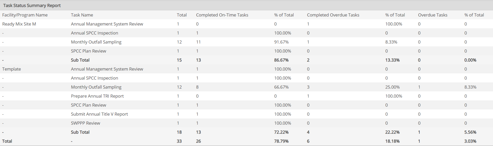

The Task Status Summary Report is used to obtain an overview of the status of all system tasks (number and percentage of tasks completed on time, completed overdue, pending, overdue, etc.).
One use for this report type may be to find potential deviations due to tasks not completed on time. For this purpose, the report could be filtered to show only "completed overdue" and "overdue" tasks.
The following statistics are available on this report:
For reports on tasks with less than 100% completion status, the Task Completion Date is the date of the latest status update or the date of creation (whichever is later).
When you create this report, you can Select the Status Summary Columns you want to include in the report.
To create or run a Task Status Summary Report, users must have Report permission for any objects whose properties are included in the report and for any objects associated with tasks for which they are not the assignee or assignor. Task assignees and assignors, however, do not need permissions for the objects associated with their tasks to run reports for these tasks.
